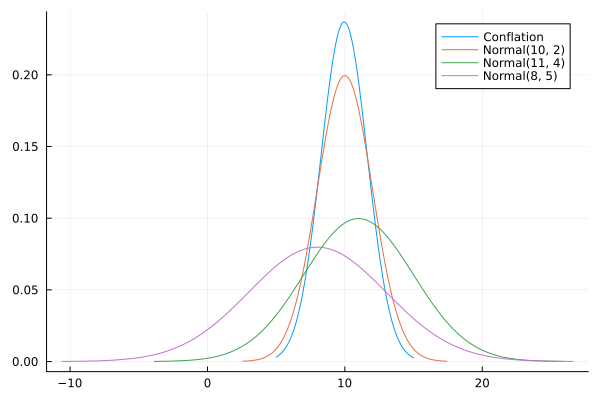
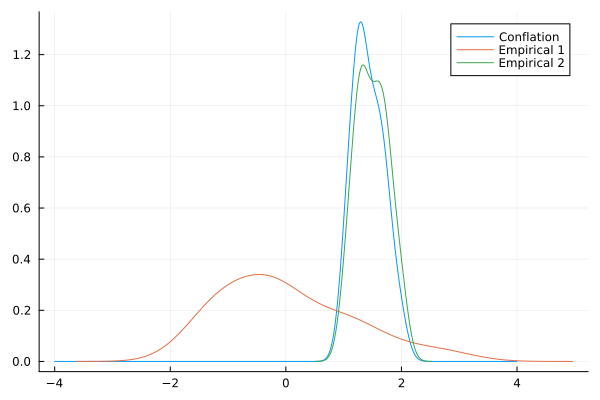

Conflation: Combining distributions
Combining different distributions is not straitghforward (Genest and Zidek, 1986). However, the conflation of probability density functions is a useful procedure which combines them provided that each of them is independent (Hill, 2011; Hill and Miller, 2011). Assuming that each distribution describing the same parameter is independent, we can define the composite distribution of $\tau$ for $M$ intervals as the conflation of individual distributions:
\[\begin{equation} \begin{aligned} Q(\tau) = \frac{ \prod_{i=1}^{M} p_i(\tau)}{\int_{-\infty}^{\infty} \prod_{i=1}^{M} p_i(x) \mathrm{d}x} \end{aligned} \end{equation}\]
Such distribution is useful e.g. when we want to build credible intervals for the time $\tau$ of co-occurrence of stratigraphic intervals. The conceptual interpretation as follows: $M$ different lineages as represented by their stratigraphic intervals should coexist at most for some time interval when they all were alive. As the conflation of densities is a density itself, it can be used for asking questions on the probability of co-existence of lineages during some arbitrary time interval given the distribution.
The application of conflation is however more general than the specific case where we combine different posterior predictives as the distribution of the co-occurrence of stratigraphic intervals. Ballen and Reinales (2025) have used the method for combining distributions into secondary calibrations as well as for estimating biogeographic events in divergence time estimation. As long as we have a vector of distributions, the calculation of their conflation is straightforward:
julia> using Distributionsjulia> using StatsPlotsjulia> using StratIntervalsjulia> dists = product_distribution([Normal(10, 2), Normal(11, 4), Normal(8, 5)])Product{Continuous, Normal{Float64}, Vector{Normal{Float64}}}(v=Normal{Float64}[Normal{Float64}(μ=10.0, σ=2.0), Normal{Float64}(μ=11.0, σ=4.0), Normal{Float64}(μ=8.0, σ=5.0)])julia> xx = 5:0.0001:155.0:0.0001:15.0julia> yy = map(x -> conflate(dists, x), xx);julia> plot(xx, yy, label="Conflation")Plot{Plots.GRBackend() n=1}julia> plot!(Normal(10, 2), label="Normal(10, 2)")Plot{Plots.GRBackend() n=2}julia> plot!(Normal(11, 4), label="Normal(11, 4)")Plot{Plots.GRBackend() n=3}julia> plot!(Normal(8, 5), label="Normal(8, 5)")Plot{Plots.GRBackend() n=4}julia> savefig("conflation_example.svg");GKS: cannot open display - headless operation mode activejulia> nothing

The conflate function also supports an input consisting of a vector of distributions, that is, without the need to use product_distribution before calling conflate:
julia> using Distributionsjulia> using StratIntervalsjulia> conflate([Normal(10, 2), Normal(11, 4), Normal(8, 5)], 9.8)0.2359169933939096julia> conflate([Uniform(0,1), Uniform(0,1)], 0.5)1.000000000169033julia> nothing
It is also possible to conflate empirical distributions defined by Kernel Densities. Supose we have two collections of values in the objects empirica1_vec and empirical2_vec which are of the same length, and we want to conflate them:
julia> using Randomjulia> using Distributionsjulia> using StatsPlotsjulia> using StratIntervalsjulia> Random.seed!(1507)Random.TaskLocalRNG()julia> #empirical1 empirical1_vec = rand(Normal(0, 1), 20)20-element Vector{Float64}: -1.319258037366362 1.0005337555526206 0.750539021144979 -0.009058532698321306 -0.5523505659119602 -1.384973961343394 -0.22857752318154667 -0.8511098167206834 -1.0299614587977524 -1.1658039374991538 0.36652920768444747 -1.2232904284509156 2.7206011426891012 -0.3447129116509491 1.2708990441502748 1.8916044043383082 -0.22220658123099474 1.1214827711299564 -0.22953943009989353 -0.11199480310204413julia> #empirical2 empirical2_vec = rand(Uniform(1, 2), 20)20-element Vector{Float64}: 1.3416865866071714 1.3701029939635738 1.1827820614597884 1.5565685825132747 1.772228970346836 1.5657605248486977 1.2925339534582683 1.984989717358323 1.262776469275738 1.5657058204188576 1.2581400239292109 1.0707808838469168 1.7545257849881333 1.4756247788395815 1.3238207966033084 1.055654334609133 1.7361306866418287 1.9652653424853526 1.734689763900406 1.6269169932543501julia> # stack them together in a matrix, column-wise empirical_matrix = [empirical1_vec empirical2_vec]20×2 Matrix{Float64}: -1.31926 1.34169 1.00053 1.3701 0.750539 1.18278 -0.00905853 1.55657 -0.552351 1.77223 -1.38497 1.56576 -0.228578 1.29253 -0.85111 1.98499 -1.02996 1.26278 -1.1658 1.56571 0.366529 1.25814 -1.22329 1.07078 2.7206 1.75453 -0.344713 1.47562 1.2709 1.32382 1.8916 1.05565 -0.222207 1.73613 1.12148 1.96527 -0.229539 1.73469 -0.111995 1.62692julia> xx = -4:0.01:4-4.0:0.01:4.0julia> yy = map(x -> conflate(empirical_matrix, x), xx);julia> plot(xx, yy, label="Conflation")Plot{Plots.GRBackend() n=1}julia> density!(empirical1_vec, label="Empirical 1")Plot{Plots.GRBackend() n=2}julia> density!(empirical2_vec, label="Empirical 2")Plot{Plots.GRBackend() n=3}julia> savefig("conflation_empiricals_samelength.svg");julia> nothing
